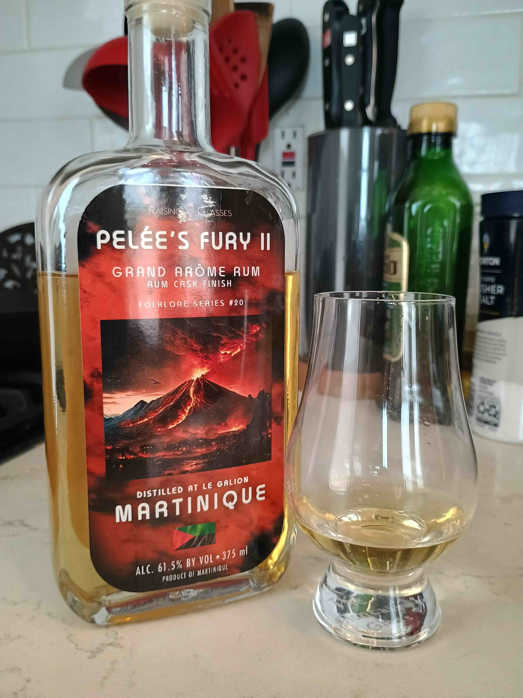

Reviewed June 19, 2026

This is Pelée's Fury II, distilled by Le Galion in Martinique and bottled by Raising Glasses in the United States. It's a molasses-based rum in the "Grand Arôme" style, meaning it underwent a long fermentation with dunder resulting in, literally, great aroma. Column still. This rum is aged for 10 months in "Barbados" rum casks (not sure which distiller, or what wood.) Bottled at 61.5% ABV.
On the nose, this lives up to the "great aroma" label and you can easily smell it a few feet away from the open bottle. The first note I get is banana candy, followed by black olive and smarties. There's some vanilla and caramel as well. A bit of strawberry candy comes out with water. Also some sharpie smell if you sit with it long enough.
On the palate, a lot of the same stuff from the nose. Black olives, banana candy, smarties. My mind goes to saltwater taffy. The caramel flavor is more pronounced than in the aroma. It reminds me a lot of the Cow Tales candy, a tube of soft caramel around a cream core.
The finish doesn't add a lot new in terms of flavors. Most of the same flavors are there, although the banana kind of turns into a banana peel flavor. It's quite warm and mouthwatering.
This is a cool rum. It adds a lot of brightness to a Mai Tai. In general it pairs well with orgeat; I did a lemon-orgeat sour with cognac and split some of the base with this rum and it was like taffy in a glass. It's fun to sip neat as well. I will say, it's expensive. I paid $60 after shipping. It works nicely in small doses though so I feel like I'll get my money's worth. I haven't had them side-by-side but I recall getting a similar olive/tropical smarties note from the Holmes Cay Grand Arôme. Kind of interesting since they're made on opposite ends of the globe, but perhaps that shows how much the production method contributes to the final flavor? If you're in the US and interested in the style I might go with the Holmes Cay first before splurging on this bottle.